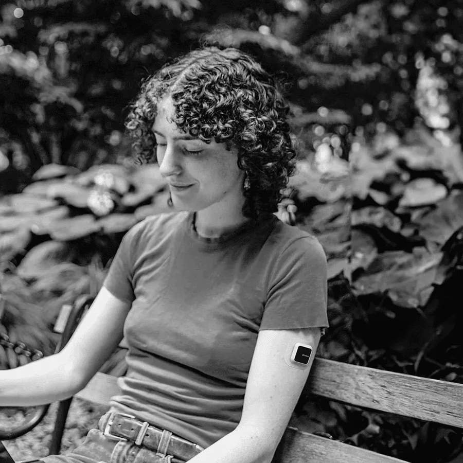
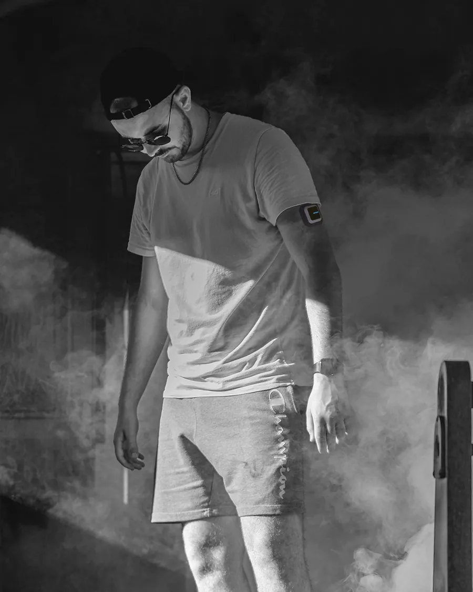
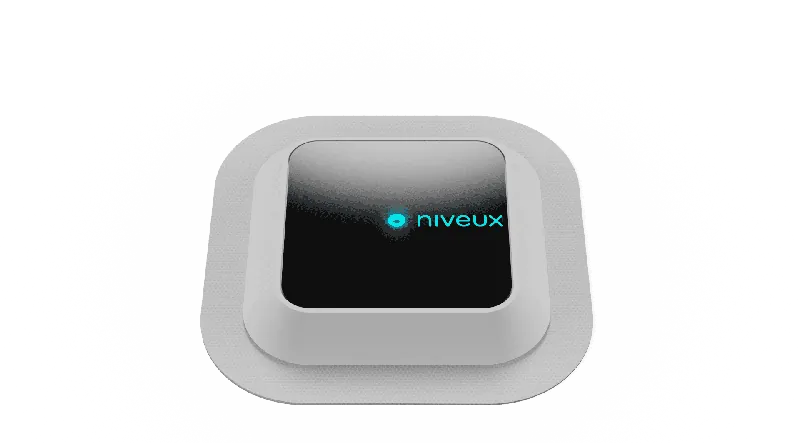
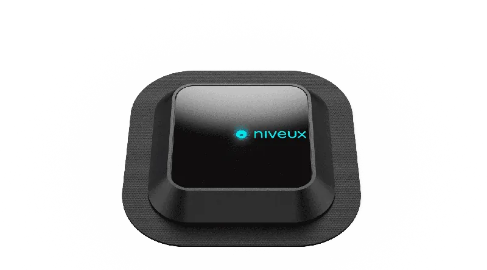
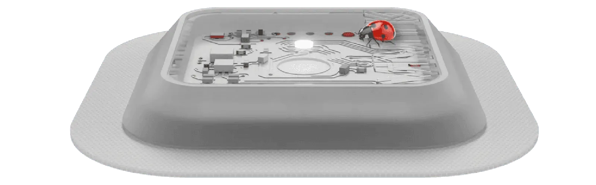
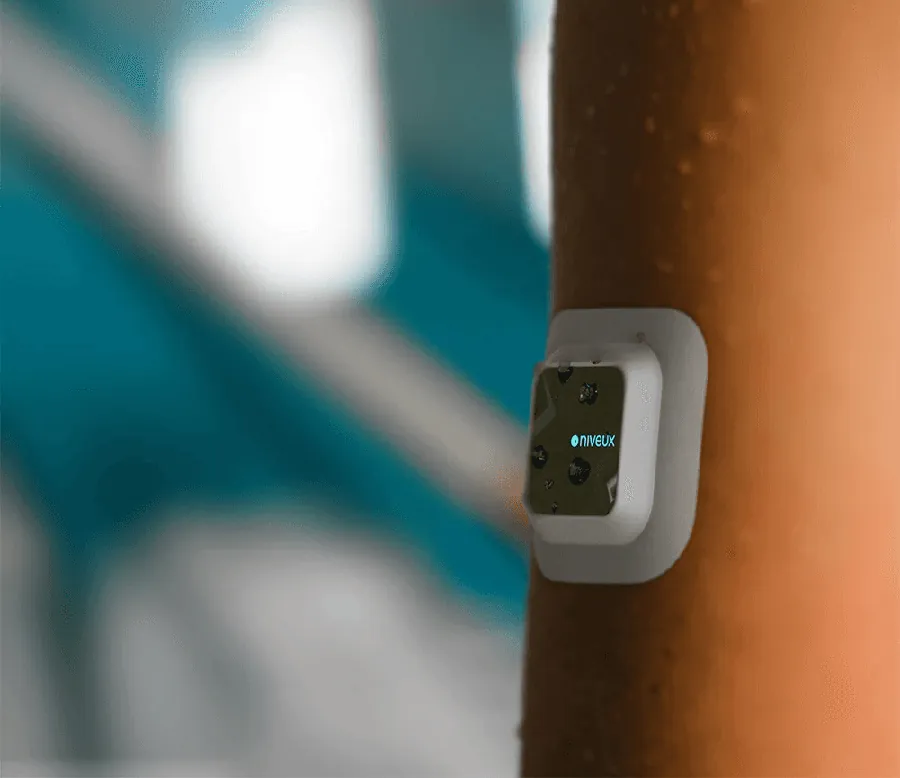
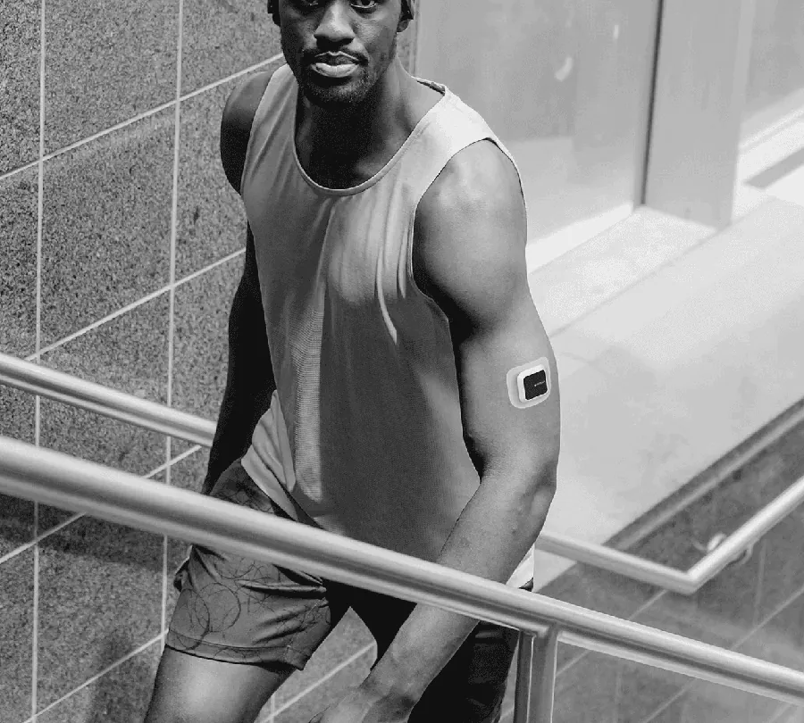
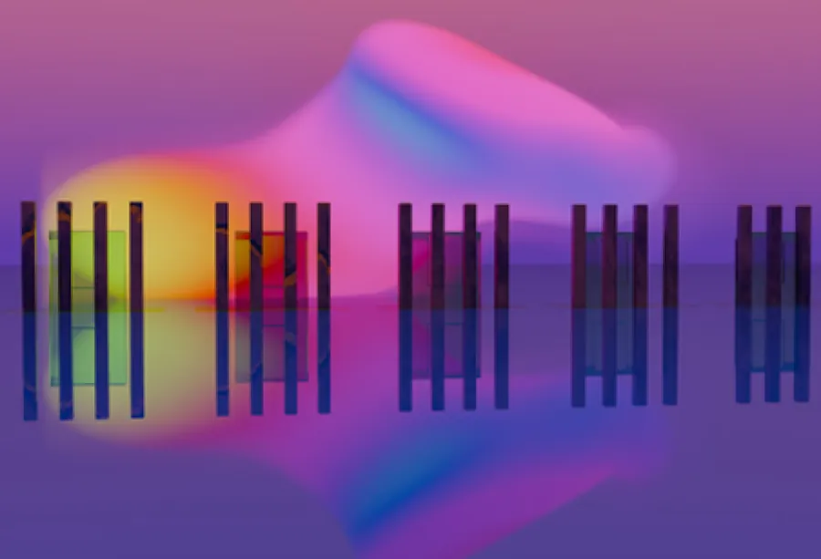
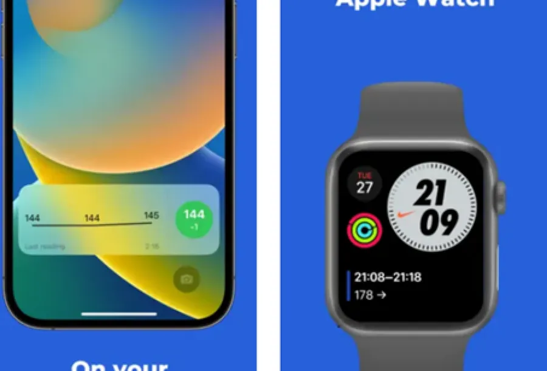

7:00, morning ride
Compete with yourself
A daily glucose score shows how your day went, so you can beat it tomorrow.


INTRODUCING
COMINGSOON
Join WaitlistYour glucose, every 5 minutes, from morning to night.
7:00, morning ride
A daily glucose score shows how your day went, so you can beat it tomorrow.
13:00, lunch
BLU nudges you to drink water, eat and move, based on what your glucose is doing.


22:00, winding down
BLU checks your glucose every 5 minutes for 15 days straight. It spots changes early and suggests habits to adjust.


Illustrative day. The line shows how glucose can move, not real data.



A soft, non-woven polyester patch and a skin-friendly adhesive keep BLU comfortable day and night.


15 dayson one sensor. The app reminds you to reorder before you run out.
5 minbetween readings, day and night.
24/7Sweat-proof, so it keeps tracking through workouts.
ETOsterilised and sealed, so every pack reaches you sterile.

What goes into every BLU sensor, and why it matters.

Keeps tracking through workouts, without a pause.

Swap it twice a month. The app reminds you to reorder before you run out.

A soft, non-woven polyester patch and a skin-friendly adhesive keep BLU comfortable day and night.

Every BLU pack is ETO-sterilised and sealed, so it reaches you sterile.

See your glucose on your phone and watch home screens, without opening the app.

Join the waitlist and we'll email you when BLU launches.